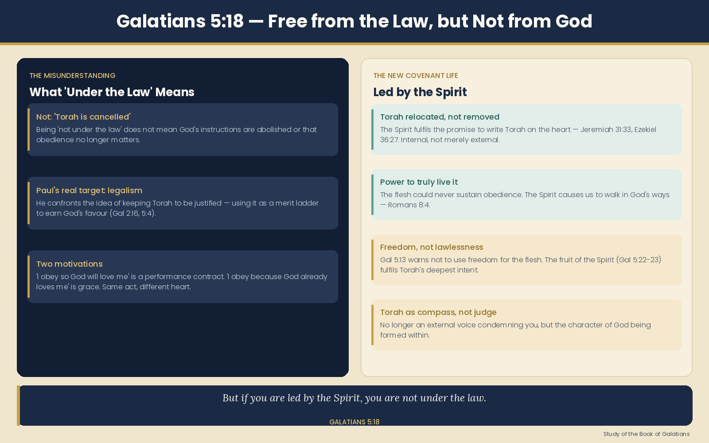

"But if you are led by the Spirit, you are not under the law."
Being led by the Spirit doesn't mean we throw out God's instructions — it means we finally have the power to truly live them.
In Galatians, Paul was writing to Gentile believers who were being pressured by certain teachers to be circumcised and keep Torah in order to be saved. Paul's problem wasn't with Torah — his problem was with using Torah as a ladder to climb to God.
Think of it this way: imagine someone says "I obey God so that He will love me." That's being under the law — a performance contract. Now imagine someone says "I obey God because He already loves me." That's grace. Same actions. Completely different heart.
"Under the law" = relating to Torah as a merit system for earning right-standing before God.
This is the heart of the matter. The Spirit doesn't replace Torah — He fulfills the promise that Torah would one day be written on our hearts (Jeremiah 31:33).
"I will put My Spirit within you and cause you to walk in My statutes."
— Ezekiel 36:27Notice: the Spirit causes us to walk in the statutes. The New Covenant doesn't erase God's instructions — it relocates them from a stone tablet to a living heart, and gives us the power to actually live them.
Imagine a child who cleans their room only because they're afraid of being punished. Now imagine an adult who keeps their home clean because they love order and care about their family. Both clean. One is driven by fear and law. One is driven by love and character. Torah is the same set of instructions — but the Spirit changes your relationship to it.
Being led by the Spirit means Torah is no longer an external voice shouting commands at you. It becomes an internal compass — the very character of God being formed in you.
Paul himself guards against the opposite error in Galatians 5:13:
"For you were called to freedom; only do not turn your freedom into an opportunity for the flesh."
— Galatians 5:13Freedom from the law's condemnation is not freedom to do whatever you want. That would be trading one problem (legalism) for another (lawlessness). The Spirit-led life produces fruit: love, joy, peace, patience (Gal 5:22–23) — which are themselves the fulfillment of everything Torah points toward.

| Under the law | Led by the Spirit |
|---|---|
| Torah as a performance test | Torah as God's wisdom for life |
| Fear-based obedience | Love-based obedience |
| Justification by works | Justification by faith in Messiah |
| External — commands from outside | Internal — written on the heart |
| Curse when you fail | Forgiveness and restoration |
Those walking with the Spirit don't need the law standing over them as a judge — because the Spirit has already made them into people who naturally want to walk in God's ways.
{kind=link}